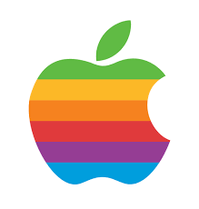

Kellogg School of Management, Northwestern University
Candidate for Master of Business Administration
Intended majors: Strategy and Finance
President, Kellogg Tech Club
Kellogg Growth Scholarship recipient
Experience
Apple Inc

MBA Intern
Developed and launched services dashboard pilot (e.g., Apple Pay, Apple Music), including A/B testing, to provide
stores with visibility on key metrics. Worked with insights team, store analytics and engineering to develop
specifications and roadmap for building services into key performance dashboard.
Google Inc
Associate, BizOps
Spearheaded creation of company-wide emerging markets strategy, working cross-functionally with Emerging
Markets VP, 7 product teams, and 3 country teams (Brazil, India, Indonesia). Analyzed mobile app trends in
emerging markets to identify new acquisition targets and mobile use case which is now under development.
Created business plan for Google[X] product targeting $110B wind energy market, adopted by Google[X] SVP.
Resulted in engineering team refining product roadmap and aligning long-term business model to proposal.
Managed Other Bets transition from Google to Alphabet: determined shared services model, IP management,
real estate terms and use of AdWords. Worked with cross-functional transition teams at Nest and DeepMind.
Mapped wearables competitive landscape and consumer preferences for Android Wear pricing study,
influenced Android Wear and external partner joint development efforts for next gen devices.
Built performance dashboards for Executive Team used during weekly company-wide SVP meetings. Prepared
strategic questions on each product area for CEO and identified revenue trends resulting in executive action.